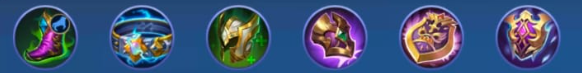
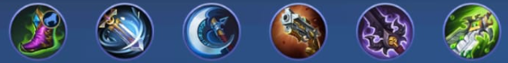
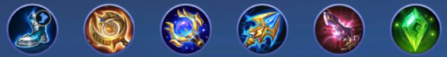
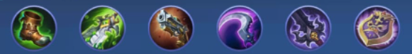
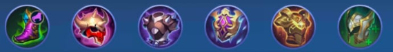

Hero Meta Terkuat Buat Push Rank ke Mythic
Halo gengs! Gimana nih habis reset season? Push rank terasa berat gak? Apalagi kalau bertemu para "penghuni asli" dari rank badak. Sudah pasti melelahkan bukan?
Nih mimin kasi rekomendasi hero-hero yang lagi OverPowered di Patch kali ini. So CEKICROT!
Yang pertama ada Karina. Hero bertipe Assassin ini lagi META nya mengisi role jungler. Dengan build tank dan retri ungu membuat hero satu ini memiliki durabily dan damage yang tinggi dalam war. Menjadikan Karina sebagai salah satu hero OP yang wajib di pick ataupun di ban ketika bermain ranked
Build yang direkomendasikan :
Build dapat berubah sesuai keadaan!
Talent wajib Sawi!
Kedua ada hero assasin dengan mobilitas yang sangat tinggi, yaitu Ling Memiliki damage burst besar dipadukan dengan kecepatan tangan yang mumpuni, hero ini akan membantai backline musuh dengan cepat. Namun Ling sangat berpatokan kepada penggunnaan energi jadi Buff biru adalah suatu kewajiban agar damage yang dihasilkan Ling lebih optimal
Build yang direkomendasikan :
Build dapat berubah sesuai keadaan!
Talent wajib Sawi!
Nah yang satu ini hero mage yang mengisi posisi roaming, Selena . Selena memiliki skill yang serba guna, baik sebagai vision maupun sebagai inisiasi. Damage burst yang dihasilkan juga lumayan besar, jadi selena pasti menjadi incaran di patch kali ini
Build yang direkomendasikan :
Build dapat berubah sesuai keadaan!
Talent menyesuaikan kebutuhan!
Beatrix menjadi hero marksman pengisi gold lane terbaik untuk saat ini. Memiliki 4 macam senjata yang masing-masingnya memiliki spesialitas masing-masing. Sehingga playstyle dari hero ini cukup bervariasi.
Build yang direkomendasikan :
Build dapat berubah sesuai keadaan!
Talent menyesuaikan kebutuhan!
Terkahir ada hero tank pengisi role jungler dengan mobilitas yang tinggi, yaitu Baxia. Skill yang dimiliki baxia cukup lengkap mulai dari mobility , damage hingga damage reduction. Dengan build yang pas, maka hero ini akan menjadi tank sekaligus damage dealer.
Build yang direkomendasikan :
Build dapat berubah sesuai keadaan!
Talent wajib Sawi!
Selain dari hero-hero yang mimin sebutkan diatas, masih banyak lagi hero yang dapat kamu gunakan. Tapi semua kembali lagi ke playstyle masing-masing. Hero diatas cuma rekomendasi dari mimin saja, hehe.
Nah, gaes. Itulah hero-hero OverPowered yang bisa kamu pakai untuk push rank di patch kali ini! Sekian dari mimin, Good Luck Push Rank nya !!